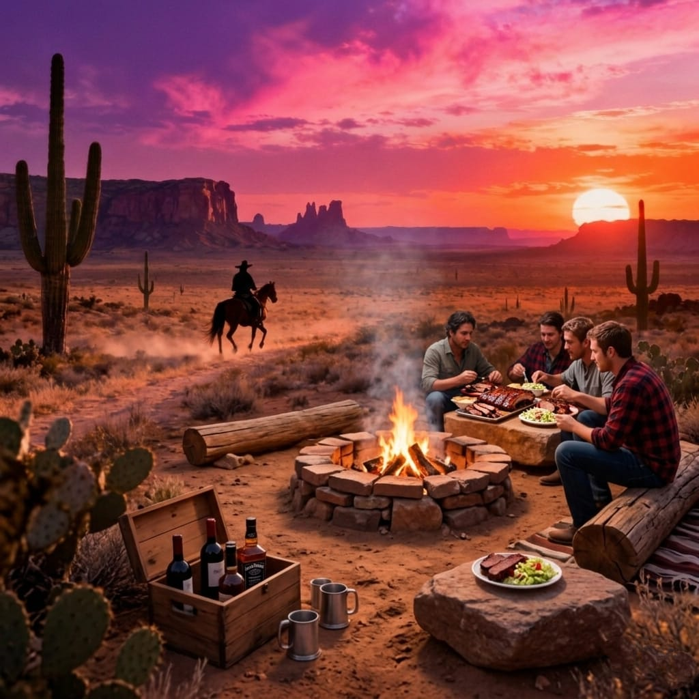

The land changes.
And when it does, something else changes with it.
Not just the light. Not just the silence. But what you eat. And how it tastes.
Because in Texas, even the food carries geography.

Where the Land Feels Endless
Big Bend — Where the Land Feels Endless
There are places where distance becomes a presence of its own.
Big Bend is one of them.
The desert does not welcome or reject you.
It simply exists, vast and indifferent, stretching beyond anything that feels familiar.
The air is dry.
The horizon is absolute.
And the silence is not empty — it is full of something you cannot quite name.
Here, food does not try to impress. It doesn't need to.
Meals feel direct. Built from what survives rather than what thrives.
Warm, simple, and grounded. Grilled meat. Beans. Tortillas.
"Nothing excessive. Nothing decorative. You eat, and it feels… appropriate. As if anything more would not belong to this place."
Where the Water Remembers
Caddo Lake — Where the Water Remembers
In East Texas, the land loosens.
It sinks into water, into shadows, into reflections that blur what is real and what is not.
Caddo Lake is not a place you fully understand.
It is a place you move through carefully.
Trees rise from the water, covered in moss that hangs like something unfinished.
The light filters differently here. Slower. Thicker.
And the food follows. It becomes softer. More fluid. More connected to what grows quietly beneath the surface.
Fish. Slow-cooked dishes. Flavors that feel deep rather than sharp.
"Nothing rushes here — not the water, not the air, not the taste. You don't just eat. You settle into it."
Where Color Becomes Structure
Palo Duro Canyon — Where Color Becomes Structure
Further north, the land opens again — but differently.
Palo Duro is not empty. It is carved.
Layers of red, orange, and stone that look less like erosion and more like design.
It feels older. Structured. Almost deliberate.
The air is clearer here. The edges sharper.
And the food reflects that clarity. Bold flavors. Direct seasoning. Dishes that feel defined rather than blended.
Grilled textures. Smoke. Salt. Heat.
"There is no ambiguity in the taste — just as there is none in the landscape."
Where the Land Softens
Hill Country — Where the Land Softens
Then, unexpectedly, Texas becomes gentle.
The Hill Country does not overwhelm. It unfolds.
Rolling land. Open sky. Quiet roads that curve instead of stretch.
It is still Texas — but without the tension.
Here, the experience shifts again. The food becomes more varied. More social. More layered.
Local wines. Slow meals. Ingredients that feel cultivated rather than extracted.
"It is less about survival. More about presence. You stay longer here. And the food reflects that."
Editorial Note
Written by Strange Texas Editorial. This feature combines place-based reflection with editorial interpretation. Some visual elements on Strange Texas are artistic compositions designed to capture atmosphere rather than document a place literally.
What makes Texas strange is not mystery.
It is contrast.
The fact that one place can feel so distant from another, while still belonging to the same ground.
And that this difference does not stop at what you see.
It continues into what you taste. What you feel. What you remember.
You don't just travel through Texas.
You experience it in layers.
Visual. Emotional. Physical.
And sometimes, without realizing it —
you carry part of it with you, long after you leave.